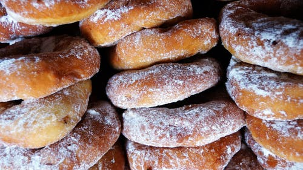

Stay Home,Stay Safe!!
My activity during MCO is making doughnuts with my sister. First of all, we stir the vinegar into the milk, and let stand for a few minutes until thick. In a medium bowl, cream together the shortening and sugar until smooth. Beat in the egg and vanilla until well blended. Sift together the flour, baking soda, and salt; stir into the sugar mixture alternating with the vinegar and milk. Roll dough out on a floured surface to 1/3 inch thickness. Cut into doughnuts using a donut cutter. Let stand for about 10 minutes. Last, heat the oil in a large deep skillet to 375 degrees F (190 degrees C). Fry doughnuts in the hot oil until golden, turning over once. Drain on paper towels. Dust with confectioners' sugar while they are still warm, and serve immediately.